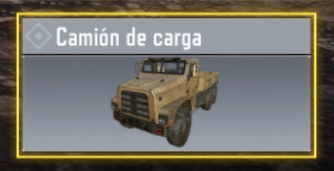

VEHICULOS
- Camión: Un vehículo grande y pesado que puede transportar a varios jugadores. Es lento pero resistente y puede atropellar a los enemigos.

- Cuatrimoto: Un vehículo pequeño y ágil que puede llevar a dos jugadores y tiene buena tracción en terrenos irregulares. Es rápido pero vulnerable y puede saltar por rampas.

- Motocicleta: Un vehículo de dos ruedas que puede llevar a dos jugadores y tiene una buena aceleración y maniobrabilidad. Es ideal para escapar o perseguir a los enemigos, pero tiene poca protección.

- Jackal: Un vehículo blindado que puede llevar a cuatro jugadores y tiene una torreta giratoria con un lanzamisiles. Es potente y versátil, tiene buena velocidad y una visibilidad limitadas. Su radar marca a los jugadores en el mapa.

- Aeromoto: Un vehículo volador que puede llevar a un jugador. Es el único vehículo que puede pasar por terreno y agua.

- Todoterreno: Un vehículo de cuatro ruedas que puede llevar a cuatro jugadores. Es un vehículo equilibrado que puede adaptarse a diferentes situaciones, pero no tiene ninguna característica sobresaliente.

- Muscle car: Un vehículo deportivo que puede llevar a dos jugadores y tiene una gran velocidad y potencia. Es el vehículo más rápido del juego, pero tiene una pobre estabilidad y una baja resistencia al daño.

- Coche de rally: Un vehículo de carreras que puede llevar a cuatro jugadores y tiene una buena tracción y maniobrabilidad. Es un vehículo ágil y preciso, pero tiene una baja potencia y una alta sensibilidad al daño.